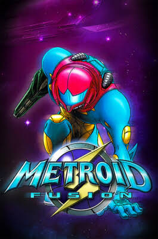

O assutador tema de Metroid Fusion
Por: Kaiky Costa
Metroid Fusion tem um dos temas mais esquisitos e fora do comum da série. Enquanto Metroid II e Super Metroid (Metroid II) >
possuem uma trilha mais divertida, Metroid Fusion traz algo mais assustador e abstrato.